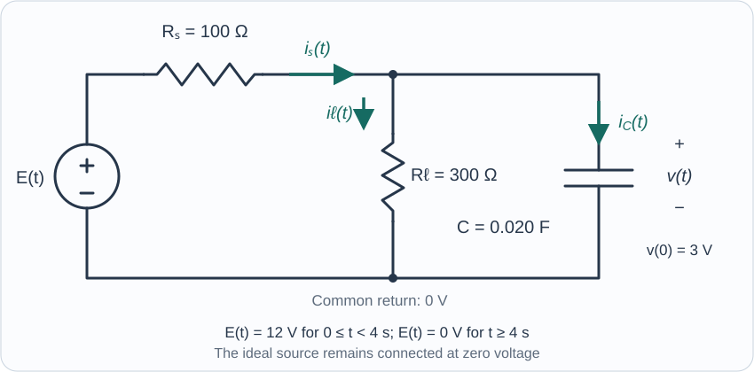

Course practice / Batch 04 / 2026-10-11 PDT
MTH 256
一阶微分方程
First-order differential equations · 分支验证、带状方向场、隐式分离变量、初值参数、模型反推与水盐及电流平衡
A square root changes the verification
Consider the real differential equation \(y^{\prime}=\sqrt{1-y^2}\), where the square root is the nonnegative one, and the candidate \(y(t)=\sin t\). The independent variable t is dimensionless.
- Identify the independent variable, dependent variable, order, and whether the equation is linear in y.
- Differentiate the candidate and simplify the right-hand side after substitution. Verify that it solves the equation on \(-\pi/2<t<\pi/2\) and satisfies \(y(0)=0\).
- Does the same candidate solve the equation for every real t? Give a specific time at which the two sides disagree.
- For a general real solution, what restriction on y is required for the right-hand side to be real? Explain why this restriction alone is not a verification of a candidate.
中文提示（不含解答）
平方根取非负值；化简平方的平方根时，注意绝对值，然后比较等号两侧。
A band of downward slopes
For \(y^{\prime}=(y-t)^2-1\), record the slope at all nine points with \(t\in\{0,1,2\}\) and \(y\in\{0,1,2\}\), then sketch a short slope segment at each point. Put t on the horizontal axis and y on the vertical axis; both variables are dimensionless.
- Find the two straight lines on which the field has horizontal segments.
- Describe the region with negative slopes and the regions with positive slopes.
- Test each zero-slope line as a proposed solution by comparing its own derivative with the differential equation.
- Can any constant function \(y(t)=c\) solve this equation on a nonempty open time interval? Justify without solving the equation.
中文提示（不含解答）
先用 y − t 的大小划分区域；检查一条曲线是否为解时，还要计算曲线自己的导数。
Separating a logarithmic feedback law
On the domain \(y>0\), solve \(y^{\prime}=-\dfrac{2t}{1+t^2}\,y\ln y\), with \(y(0)=4\). Both t and y are dimensionless.
- Check for constant solutions in the stated domain before dividing by factors involving y.
- Separate variables and integrate. Keep track of the sign of \(\ln y\) selected by the initial value, and obtain an explicit solution.
- Verify the equation and initial condition. State the maximal open time interval containing zero.
- Find all real times when y = 2. Determine where the solution increases and decreases, its global maximum, and its limits as \(t\to-\infty\) and \(t\to\infty\).
- Does \(y=0\) qualify as an equilibrium of the equation as stated? Explain using its domain.
中文提示（不含解答）
可先把 ln y 当成一个整体；在除法过程中排除的常值解，要回到原方程检查。
An implicit answer can be complete
Solve the IVP \(y^{\prime}=\dfrac{t}{1+y^2}\), \(y(0)=1\), with dimensionless t and y. You do not need to use a cubic formula.
- Separate variables and obtain an implicit relation between t and y, including the initial condition.
- Let \(g(u)=u+u^3/3\). Use its derivative and its limits as \(u\to\pm\infty\) to explain why your relation selects exactly one real y for every real t.
- Differentiate the implicit relation to verify the differential equation. State the maximal open time interval containing zero.
- Determine where y increases or decreases and find its global minimum. Explain whether \(y(-t)=y(t)\).
- Find the first nonnegative time when y = 2, exactly and to three decimals. Explain why y can never equal zero for this IVP.
中文提示（不含解答）
不必强行解三次方程；研究左边关于 y 的单调性，能确定分支与可取值。
Choose initial data for a bounded response
For dimensionless \(t>0\), consider the family of IVPs \(y^{\prime}+\dfrac{1}{t}y=\dfrac{e^{-t}}{t}\), \(y(1)=a\), where a is a real constant.
- Use an integrating factor to solve in terms of a. Display the product-derivative equation and verify the initial condition.
- Find the unique value of a for which the solution has a finite limit as \(t\to0^+\), and compute that limit.
- For smaller and larger values of a, determine the corresponding one-sided behavior as \(t\to0^+\).
- For the bounded member of the family, find \(\lim_{t\to\infty}y(t)\). Show that \(e^{-t}<y(t)<1\) for every \(t>0\), for example by comparing an integral with rectangles.
- State the maximal interval allowed by the original IVP. Does a finite endpoint limit make the original differential equation defined at t = 0?
中文提示（不含解答）
先保留初值参数；观察趋近零时分子是否留下非零常数，再处理可消去的情况。
Recover the room temperature from three readings
A sample cools in a room whose unknown constant temperature is A °C. Its temperature is 80 °C initially, 56 °C after 4 minutes, and 44 °C after 8 minutes. Assume \(T^{\prime}=-k(T-A)\), with \(k>0\), \(A<44\) °C, and t measured in minutes. Use this model for \(t\ge0\).
- Derive T(t) in terms of A and k.
- Use both later readings to determine A and k, including units. Explain why equal observation intervals imply the same ratio of temperature differences from A.
- Verify all three measurements using your model.
- Find the first time the sample reaches 40 °C, exactly and to two decimals. Find its initial cooling rate, with units.
- Does the sample ever reach the room temperature at a finite time? Justify from the formula.
中文提示（不含解答）
未知环境温度不能直接拿相邻读数相除；先写出相对于同一环境温度的温差。
Growth can lose to a fixed withdrawal
A continuously modeled culture has population P(t), measured in organisms, and obeys \(P^{\prime}=0.08P-24\). Time t is in hours, 0.08 has units h\(^{-1}\), and 24 is a constant removal rate in organisms/hour. Use the model only while \(P\ge0\); stop a trajectory if it first reaches zero. Compare two trials with initial populations \(P(0)=200\) and \(P(0)=500\).
- Find the equilibrium population and classify it using the sign of \(P^{\prime}\) on its two sides.
- Use a shift by the equilibrium, or an integrating factor, to solve both IVPs.
- For the 200-organism trial, find the first time it reaches zero, exactly and to two decimals. State its physical forward-time interval.
- For the 500-organism trial, find when it first reaches 1000 organisms, exactly and to two decimals, and describe its long-term behavior under the model.
- Calculate both initial net rates. Explain why a positive proportional-growth coefficient does not guarantee that both populations increase.
中文提示（不含解答）
先找净变化率为零的数量，再看初始值位于哪一侧；数量到零后不要继续作物理解释。
Logistic recovery from overcrowding
A habitat has carrying capacity 900 organisms. A temporarily overcrowded population is modeled by \(P^{\prime}=0.12P(1-P/900)\), \(P(0)=1500\), where t is in days and 0.12 has units day\(^{-1}\). Interpret the population model for \(t\ge0\).
- Find the nonnegative equilibria and classify them using slope signs on \(P\ge0\).
- Solve the IVP by separation. Explain how the initial population affects the sign of the constant in the denominator of the explicit solution.
- Find the initial rate, and the first time the population reaches 1000 organisms, exactly and to two decimals.
- Show that the population stays above 900 at every finite nonnegative time. Find its forward-time limit.
- As a separate mathematical question, find the maximal open interval containing zero on which your explicit IVP solution is finite. Describe its behavior at the backward endpoint; do not treat that backward extension as measured population history.
中文提示（不含解答）
初值在承载量上方，部分分式积分时不能提前假设承载量减去种群数量为正。
Evaporation removes water but leaves the salt
A tank initially contains 60 L of liquid with 3.0 kg of dissolved salt. Brine enters at 3 L/min, perfectly mixed liquid is drained at 2 L/min, and water evaporates at 1 L/min. Evaporation carries away no salt. During a 20-minute experiment the incoming concentration is \(C_{\rm in}(t)=0.020+0.0010t\) kg/L, with t entered in minutes; the coefficient 0.0010 has units kg/(L·min). Assume ideal mixing, constant volume-flow rates, no other losses, and use this model only for \(0\le t\le20\).
- Find the tank volume and set up the IVP for salt mass S(t), in kg. Explain why the evaporation rate does not multiply the tank concentration in the salt-loss term.
- Solve for S(t) with an integrating factor, and obtain the tank concentration \(C(t)\).
- Find the time and value of the minimum salt mass during the experiment, with time to two decimals and mass to three decimals. Give the corresponding concentration to five decimals.
- At t = 20, compute S, C, the incoming concentration, and \(S^{\prime}\), with units. Is the salt mass rising even though the incoming concentration is smaller than the tank concentration? Reconcile your conclusion with the two liquid flow rates.
- Compute the total salt entering and the total salt drained during the 20 minutes. Check the salt-mass balance using your final mass. State why this fitted input law should not automatically be extrapolated beyond the experiment.
中文提示（不含解答）
先分别列水量平衡与盐量平衡；蒸发影响体积，但这里不会直接带走盐。
A voltage pulse with a leakage path
The circuit shown has an ideal voltage source E(t), a series resistor \(R_s=100\) Ω, and a parallel combination of a leakage resistor \(R_\ell=300\) Ω and capacitor \(C=0.020\) F. The capacitor voltage v(t), in volts, is positive at the upper node and initially equals 3 V. Source current \(i_s\) is positive toward that node; leakage current \(i_\ell\) and capacitor current \(i_C\) are positive downward. The ideal source remains connected, permits current in either direction, and is set to 12 V for \(0\le t<4\) seconds and 0 V for \(t\ge4\). Setting an ideal source to 0 V makes its terminals a conducting connection. Capacitor voltage is continuous at t = 4. Apply the differential equation within each stage and use one-sided currents at the switching time.
- Use the branch-current formulas to derive a first-order IVP for v(t), then solve in both stages and match the voltage at t = 4.
- Find the common time constant of the two stages and the steady voltage that would result if the source stayed at 12 V indefinitely. Explain why that steady voltage differs from the source voltage.
- Calculate \(i_s(0^+)\), \(i_\ell(0^+)\), and \(i_C(0^+)\), and check current conservation.
- Compute v(4), \(i_s(4^-)\), \(i_s(4^+)\), \(i_C(4^-)\), and \(i_C(4^+)\). Give voltage to three decimals and currents in mA to two decimals. Explain why these current jumps are compatible with a continuous capacitor voltage.
- Find the full time interval on which v(t) is at least 6 V, and its duration, with times to three decimals. Find the maximum capacitor charge and when it occurs.

中文提示（不含解答）
先在上方节点写电流守恒；泄漏电阻一直存在，第二阶段也要保留两个电阻的作用。